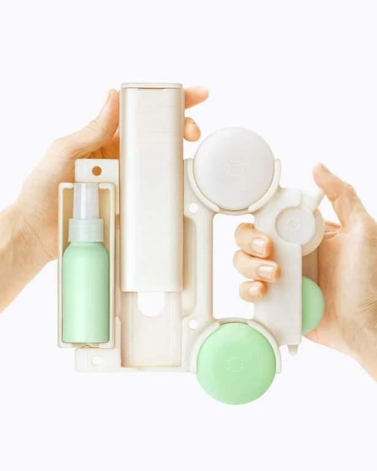

OEM и Lapka: Переосмысление идей или намеренный референс?
В мире дизайна и маркетинга иногда встречаются проекты, которые вызывают ощущение дежавю. Недавний кампейн OEM стал именно таким случаем, породив вопросы о его происхождении и целях. В ходе визуального исследования стало очевидно, что он подозрительно напоминает работы Lapka, вызвав интерес к связи между этими двумя проектами.
Сходство концепций и создателей
Сходство оказалось неслучайным. Выяснилось, что оба проекта, OEM и Lapka, базируются на схожей human-centric концепции, где продукт выступает как инструмент для улучшения жизни человека. Более того, описанием и съемкой для обоих проектов занимались практически одни и те же люди. Это навело на мысль о намеренном референсе, а не просто случайном совпадении
Перезагрузка старой идеи
Возможно, это попытка дать идее Lapka вторую жизнь в новых условиях. OEM как будто переосмысливает и адаптирует эту концепцию к современному миру, в котором тренд на self-care, саморазвитие и внимательное отношение к собственному благополучию является очень актуальным. Lapka, по-видимому, появилась слишком рано, не вписавшись в своё время, а OEM отлично попадает в сегодняшние тренды, что позволяет ей процветать
Главное — адаптация и развитие
Самая жизнеспособная идея — это та, которая не стоит на месте, а развивается и адаптируется к изменяющимся условиям. Недостаточно просто придумать что-то оригинальное; важно уметь переосмысливать свои идеи, давать им новую жизнь, помогать им «столкнуться с реальным миром» и оставаться актуальными в течение долгого времени. Поэтому, в случае с OEM и Lapka, такое переосмысление кажется оправданным и вполне успешным. Это показывает, что даже «старые» идеи могут засиять новыми красками, если их правильно адаптировать и представить